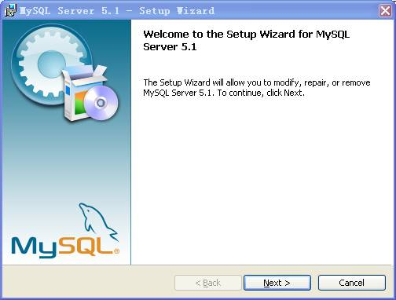
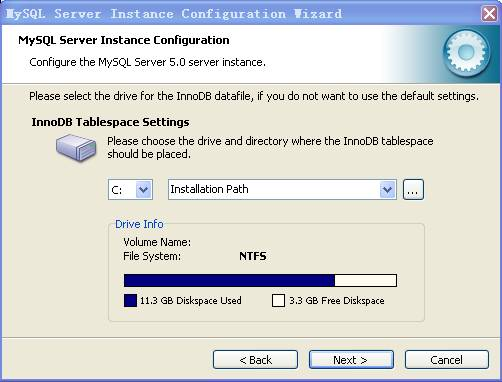
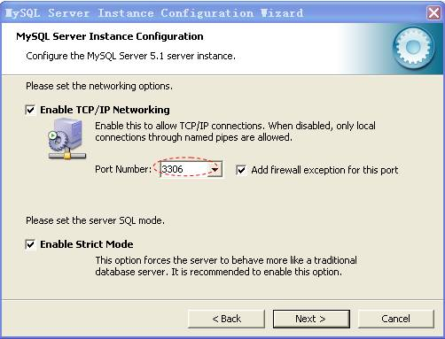
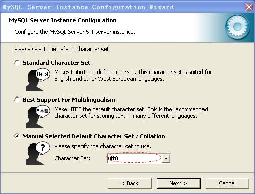
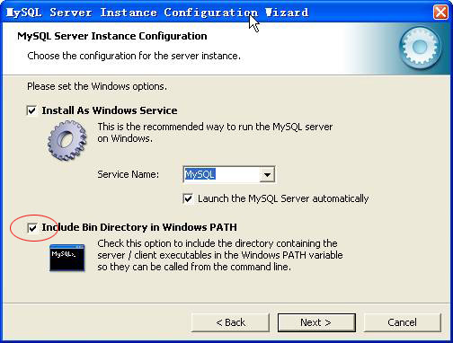
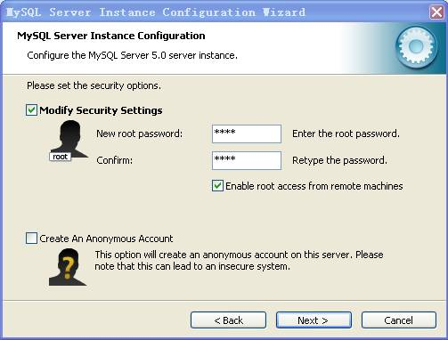

数据库安装
如果需要在本机安装数据库服务器，请在软件安装前进行。在光盘自动弹出的安装程序选择菜单中，选择安装MySQL 5.1数据库，安装过程如下所示：
1．点击安装MySQL 5.1，弹出如下界面：

2．每一步只须点击Next即可，程序会自动安装到C盘Program Files下，安装完成后提示：是否现在配置MySQL服务器，勾选后点击Finish。

3．系统弹出配置信息界面，点击Next，直到出现如下界面，选择数据库的存放位置，点击Next。

4.直到显示如下界面，数据库使用的端口号为3306（可选择其他端口），勾选【Add firewall exception for this port】，勾选后其他电脑方可访问本数据库。

5．点击【Next】，显示如下界面，点击【Manual Selected Default Character Set/Collation】，在下拉菜单中选择utf8，在下拉菜单中选择服务器使用的语言编码格式为【utf8】。

6．点击【Next】弹出以下界面，选择数据库名称。

7．在安全设置界面，设置用户root的安全密码，如未曾设过密码则原密码项可不填，并勾选【Enable root access from remote machines】，勾选后其他电脑方可访问此数据库：

8．在下面的界面中，点击【Execute】，系统会自动执行配置信息，如果四项信息全都通过，如下图所示，则安装完成，点击【Finish】结束安装。